I encountered data science more than 10 years ago back in college where I was fascinated to find out that the speed of data generation was faster than the speed of analyzing it in Biology. This motivated me to pursue a Ph.D. in the intersection of statistics, computer science and biology. Over the years, I have developed several software tools and algorithms using mathematical and statistical models with broad applications in cancer research and drug development. Now my interest has expanded and I would like to tackle the challenging data from more diverse areas by applying the theories and practices of data mining gained to date.
Besides my job duty, I have worked on multiple side projects that have greatly expanded my knowledge and skills (for details, please refer to the project section). The habbit of constant learning, curiosity of new technologies as well as survival from Ph.D. training full of stress and uncertainty all make me a data scientist who gets work done :)


 
